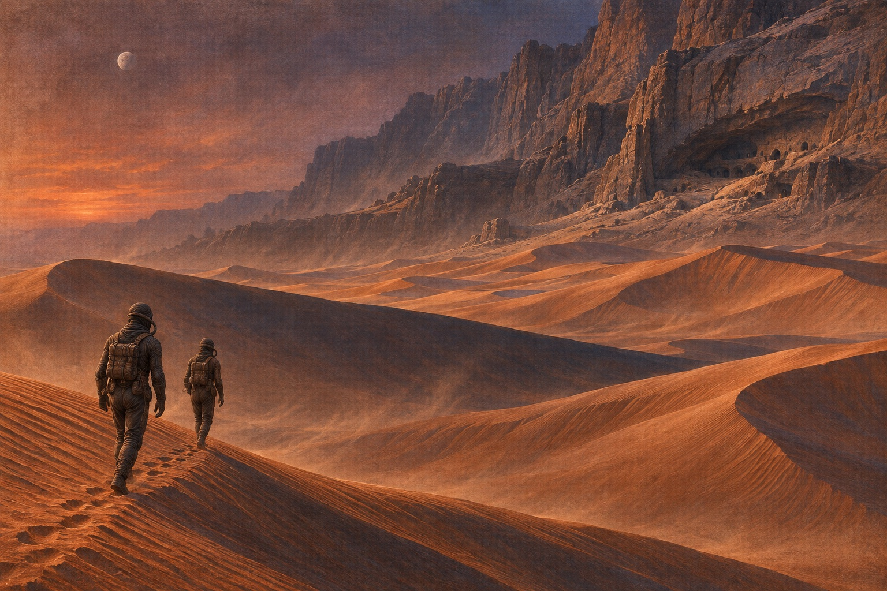
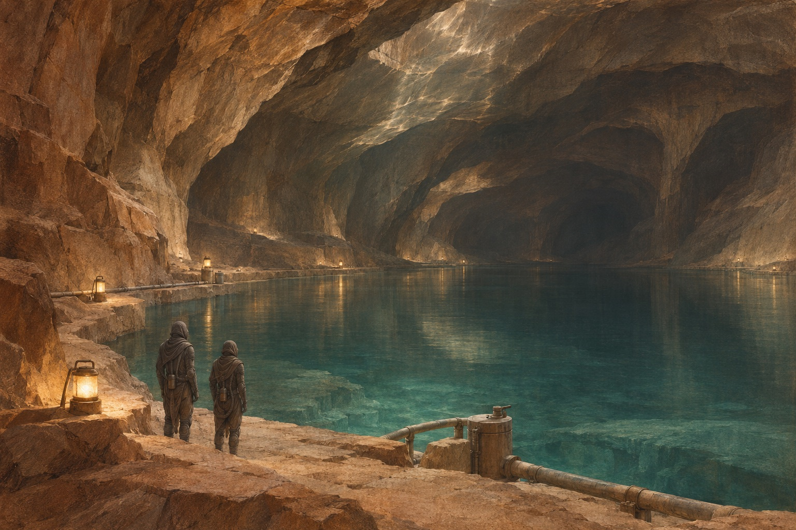

一份带着陷阱的封赏
皇帝命厄崔迪家族接管厄拉科斯，这颗荒漠行星是香料的唯一产地。表面上，雷托公爵得到地位与财富；实际上，哈克南的旧势力和皇帝对公爵声望的忌惮，使这次调任充满危险。雷托仍接受命令，希望凭组织能力和当地居民建立新的根基，保罗则必须离开熟悉的海洋世界，面对继承者的责任。雷托接过诏书时，对保罗说：这不是封赏，是陷阱。保罗问：那我们为什么去？他说：因为不去，皇帝现在就会杀我们。
迁往沙的星球
厄崔迪家族整族迁往厄拉科斯。飞船降落时，保罗第一次看见无边无际的沙海。雷托公爵站在舱门口说：这里是我们的新家，也是我们的坟墓。他不知道自己说对了一半。
盒子与毒针
贝尼·杰瑟里特圣母莫希阿姆前来检验保罗，令他把手伸入产生剧痛幻觉的盒子，同时以毒针限制他的逃避。保罗忍过考验，却无法理解自己为何被当作一项长期计划的结果来观察。母亲杰西卡曾违背姐妹会要求生下儿子；她传授的训练给了保罗生存能力，也使他走进一套跨越家族的育种与权力安排。保罗把手从盒子里抽出来，指尖在抖。圣母说：痛是暂时的，恐惧会杀死你。她说：你母亲当年也通过了。保罗问：她怕吗？圣母说：怕，但她没抽手。
其一戈姆刺
圣母用一根毒针抵住保罗的脖子，让他把手伸进盒子。盒子里是剧痛，但他不能抽手，否则会被刺死。
其二人
他忍住了。圣母说：一个动物会抽手，一个人不会。这是他成为魁萨茨·哈德拉克的第一道门。
男爵的安排
弗拉基米尔·哈克南男爵与门泰特彼得制定反攻计划。他们利用厄崔迪家族对内部医生的信任，同时获得皇帝秘密派出的萨多卡支援。阴谋既要毁掉公爵，也要掩盖皇室亲自打击贵族的事实。费德在旁学习这种以人心和资源作筹码的政治，哈克南的再次接管从一开始就不是普通领地争端。男爵对彼得说：厄崔迪家有一个弱点——他们相信自己人。彼得问：岳医生？男爵笑了：苏克医生不能背叛，可他的妻子可以。
拉班的暴政
哈克南把厄拉科斯交给拉班统治。他提高香料配额，随意处决，把弗雷曼人赶进更深的地下。男爵要的不是治理，是让这颗星球在他交还时已经流干了血。拉班把弗雷曼人的村子烧了，把水倒进沙里。他说：他们不需要水，他们需要害怕。男爵听说后，说：我让他统治，不是让他发疯。
继承人的课程
保罗在戈尼的剑术训练、哈瓦特的观察与判断训练，以及母亲的身体和声音控制中成长。父亲向他说明家族与皇帝之间的危险平衡，希望他成为能够担当局势的人。保罗同时开始梦见陌生的沙漠与少女，这些经验还没有形成可以解释的能力，却已经使他的未来不只是一份领地和头衔。戈尼教保罗用刀时，说：护盾挡快不挡慢。他慢慢把刀推进去，停在保罗喉咙前一寸。保罗没眨眼。戈尼说：你父亲会为你骄傲。
干旱世界中的预言
厄崔迪家族抵达厄拉肯，面对旧统治者留下的设备与人脉，也面对水极其珍贵的生活。侍女梅普斯接触杰西卡，以弗雷曼传统中的暗号试探她。杰西卡认出其中有姐妹会早年铺设的宗教保护网络：外来者在危急时可以借这些预言求生，却也会被人们对救世者的期待推向一个更大的角色。梅普斯递给杰西卡一杯水，说：在这里，水是礼物。杰西卡接过，没有立刻喝。梅普斯说：你怀疑有毒？杰西卡说：我怀疑一切。
第一次见到弗雷曼人
保罗在厄拉肯的走廊里遇见一群弗雷曼人。他们穿着蒸馏服，眼睛是蓝色的，走路没有声音。一个人对他说：你走路像沙漠里的人。保罗回答：我梦见过你们。那个弗雷曼人叫斯第尔格，眼睛蓝得像洗过。他问保罗：你从哪里来？保罗说：卡拉丹。斯第尔格说：那里有水吗？保罗说：有，很多。斯第尔格沉默了很久，说：我不会去。
猎杀机藏在墙后
保罗在住处遭遇微型猎杀机袭击，凭训练保持不动，并抓住接近的机器。袭击者藏在旧宅内部，使公爵的新居暴露出并未清除的危险。哈瓦特因安保失误自责，家族随即加强戒备。敌人不需要先赢得公开战争，只要在日常设备与人员之间留下一道缝隙，就能把继承人变成脆弱的目标。猎杀机贴着保罗的脖子飞过来，他屏住呼吸，一动不动。机器停在他面前，扫描他的瞳孔。他一把抓住它，捏碎。手心全是汗。
舍弃香料救人
雷托与保罗随帝国行星学家列特·凯恩斯视察香料采集。沙虫接近采集车时，本应前来吊走设备的运载机失约，雷托立即组织撤走工人，放弃整车香料。凯恩斯从这个选择中重新评价公爵。对当地人而言，新主人是否会把生命放在利润之前，远比一份宣称善意的政令更能建立信任。采集车被沙虫吞掉时，雷托没有命令开炮。他说：让机器沉下去，人上来。凯恩斯看着他把工人一个一个点齐，说：你跟他们说的不一样。雷托问：他们怎么说我？她说：说你是厄崔迪。雷托下令放弃整车香料时，会计说：那是三十万。雷托说：那是三十万，这些是人命。凯恩斯在旁边听着，什么也没说，但她后来对弗雷曼人说：这个公爵不一样。
一张桌子上的多重效忠
公爵举行宴会，将地方商人、帝国代表与新统治者的随员聚到一起。围绕水、香料与贸易的谈话，让保罗和杰西卡看到礼节之下的利益冲突。凯恩斯既有帝国官员的身份，也与弗雷曼人紧密相连；家族试图从这些模糊的效忠中寻找盟友，却还没有足够时间把初步的接触变成稳固的防御。宴会上，一个商人问保罗：公爵的儿子，你喝过真正的水吗？保罗说：喝过。那人说：那你不知道水的价钱。保罗说：我知道，一斤水等于一条命。

医生打开了防线
岳医生被哈克南以妻子旺娜的命运胁迫，突破了外界认为不可破坏的苏克医生条件制约。他解除要塞防御，令雷托失去行动能力，使突袭得以成功。与此同时，岳给公爵安装毒气牙，并为保罗与杰西卡留下逃生物资。一次背叛包含着他想借公爵杀死男爵的复仇，家族却必须承受真实的毁灭。岳医生打开防线时，手在抖。他对雷托说：他们抓了我的妻子。雷托说：我明白。岳说：你不明白。他按下按钮，门开了。
公爵最后的武器
哈克南与伪装的萨多卡联军摧毁厄崔迪防线，岳未能从交易中保住自己。被俘的雷托咬破毒牙，想用最后的机会杀死男爵；毒气杀死彼得等人，男爵却逃过一劫。公爵死亡，失去主人的军队分散或被俘。哈克南恢复统治，但以背叛换来的胜利并未按阴谋者设想彻底清除厄崔迪的继承线。雷托咬破毒牙时，男爵在他面前。他说：你和我，都会死在这颗星球上。男爵说：我不会。雷托笑了，然后倒下。毒气弥漫，男爵的护盾亮了一下。
母子逃出押送
保罗和杰西卡被带离城市，敌人准备让沙漠替自己完成杀戮。杰西卡利用音言控制押送者，保罗配合反击，两人夺得逃生机会。岳预留的弗雷曼装备与物资帮助他们抵抗干旱。失去家族军队后，他们能继续活下去的条件已改变：贵族身份不能挡住脱水、沙虫与追兵，只有迅速学会环境的规则。杰西卡用音言对押送者说：解开绳子。那人愣了，手自己动起来。保罗扑上去夺刀。他们跑进沙暴里，身后是枪声。
香料打开的视野
香料与压力使保罗潜藏的能力迅速增强。他在帐篷中看见多种可能未来，也推知母亲的哈克南血统：敌人的家族就在自己的血缘之中。他还看到弗雷曼军队可能以他的名字向外扩张。父亲之死尚未来得及被充分哀悼，继承与复仇已经同一场他未必能够控制的宗教战争纠缠在一起。保罗在帐篷里看见未来：一场以他名义发动的圣战，死了几十亿人。他抓住母亲的手说：我不想当那个人。杰西卡说：你已经是了。
看见圣战
香料让保罗的预知能力彻底打开。他看见自己带领弗雷曼人横扫宇宙，以他的名义发动的圣战死了几十亿人。他想停下来，却发现每一条路都通向同一个结局。保罗看见圣战的幻象时，杰西卡抓住他的手：你看见了什么？他说：火，还有我的名字。她说：那不是我教你的。他说：那是我看见的。
邓肯守住出口
邓肯找到母子，并与凯恩斯帮助他们利用旧生态设施暂避。萨多卡追兵迫近时，他留下作战，为保罗与杰西卡争取离开的时间，最终战死。雷托曾希望联结的弗雷曼世界，此时已成为继承人逃亡的重要通道。忠诚不再表现为保卫一座城堡，而是让家族仅存的希望有机会进入敌军难以掌握的沙漠。邓肯把他们送进生态站，说：我留下来。保罗说：你打不过他们。邓肯说：我知道。他把门关上，外面传来枪声，响了很久。
生态学家的死亡
凯恩斯援助厄崔迪后落入敌人手中，被弃置在沙漠里。他在重伤与缺水中回想父亲的生态理想，也继续判断脚下环境的危险，最终死于香料喷发。这个人的死亡带走了帝国官员与弗雷曼领袖之间的一座桥梁，却没有消灭改变行星的长期计划；他的女儿契妮和族人仍承接着这份未来。凯恩斯死前，把一根管子插进沙里，说：水在下面，三十米。他对弗雷曼人说：你们的梦想，在这里。说完，香料喷了出来，他倒下去。凯恩斯被扔在沙漠里，身边只有一件蒸馏服。他知道自己活不了，就把水管插进沙里，想把最后一点水留给弗雷曼人。香料喷出来时，他笑了。
把飞行交给风暴
保罗与杰西卡借扑翼机进入沙暴，利用保罗对风与可能路径的判断穿出险境。落地后，他们穿上蒸馏服，避开会引来沙虫的规律步伐，寻找能够停留的岩地。原先教室里的知识被迫变成身体经验；每一次错误都可能浪费最后的水，母子必须在真正接触弗雷曼人以前，先证明自己能承受这片土地。扑翼机冲进沙暴，机身抖得像要散架。保罗说：往左，风眼在左边。杰西卡说：你怎么知道？他说：我看见的。他们冲出去时，天是黄的。
斯第尔格的判断
母子遇到斯第尔格率领的弗雷曼队伍。保罗迅速制服对手，杰西卡则用姐妹会武技控制斯第尔格，使族人看到两名外来者具备值得保留的能力。保罗认出梦中少女契妮，她是凯恩斯的女儿。接纳仍然不是无条件的庇护，部族要衡量水、训练与生存的收益，而贾米斯并不愿意接受首领的决定。斯第尔格被杰西卡制住，动弹不得。他说：你是谁？她说：一个母亲。他说：你不是。她说：那你告诉我，我是什么。他沉默了。
第一次杀死一个人
贾米斯依照习俗发起挑战，保罗代表母亲迎战。他习惯了护盾训练，起初收住攻击，反而让旁观者误以为他在戏弄对手。决斗不允许以投降结束，保罗最终杀死贾米斯。胜利使母子取得进入部族的资格，也使保罗第一次直接承担夺取生命的后果；这个门槛无法只凭技巧或预知绕过。贾米斯死时，保罗听见人群里有人说：他哭了。他确实哭了。斯第尔格说：你为敌人哭？保罗说：我为自己哭。斯第尔格说：那你还是个孩子。保罗杀了贾米斯后，跪在地上吐了。斯第尔格说：第一次都这样。保罗说：我不想习惯。斯第尔格说：你会习惯的。
献给死者的水
弗雷曼人举行葬礼，将贾米斯身体中的水归还群体。保罗说起死者给自己带来的认识，并流下眼泪；在极端缺水的社会，这种举动具有特别的分量。贾米斯的遗孀哈拉与孩子也成为他需要承担的责任。保罗逐渐明白，融入部族既是学习怎样杀敌，也是接受一个人的死亡如何继续改变活着的人。葬礼上，弗雷曼人把贾米斯的水倒进水池。保罗哭了，一个老人说：你为死者流泪，就是把水还给他。保罗说：我不是弗雷曼人。老人说：现在你是了。
乌索与穆阿迪布
保罗在弗雷曼人中得到私下使用的名字乌索，又选择沙漠鼠穆阿迪布作为公开名字，同时保留自己的厄崔迪身份。他学习穴地中的纪律、节水办法与沙漠知识，也开始传授母亲教给他的战斗方法。一个落难的继承人由此获得新的社会位置，而族人对他的期待，正将名字变成越来越有力量的象征。斯第尔格给保罗取名穆阿迪布，说：这是沙漠鼠，能在最干的地方活下来。保罗说：我不喜欢这个名字。斯第尔格说：你会喜欢的。
其一两个名字
弗雷曼人给他取名“乌索”（木头的根基）和“穆阿迪布”（沙漠之鼠）。后者成了他的救世主名号。
其二误会
他们相信他是来自外星的先知。这个误会后来成了他无法摆脱的枷锁——他被推上神坛，也被神坛困住。
生命之水与未出生的孩子
为接续年老圣母拉玛罗，杰西卡饮下从幼年沙虫获得的毒液，以受训的身体转化毒性，并承接女性先人的记忆。她尚未出生的女儿艾莉娅也因此在胎中提前觉醒。部族获得新的圣母，母女却承受了仪式不曾为孕妇准备的后果。宗教传统、姐妹会训练和血缘，在同一具身体里发生了难以逆转的交汇。杰西卡喝下生命之水时，全身抽搐。她看见祖先的记忆涌来，男人和女人的声音一起说话。她醒来时，说：我看见了。拉玛罗说：你看见了什么？她说：所有的我。
新的家庭与游击战争
保罗与契妮结为伴侣，生下取名雷托的儿子；杰西卡的女儿艾莉娅也出生并长大，表现出远超年龄的记忆与判断。与此同时，弗雷曼人不断袭击香料生产，保罗训练的战士越来越强。家庭、部族与复仇行动暂时共同生长，但穆阿迪布的声望也逐渐超出一个军事指挥者能够随意收回的范围。保罗抱着刚出生的儿子雷托，说：他会比我好。契妮说：他会的。她不知道，这个孩子几年后会死在萨多卡的枪下。
让沙漠开花
凯恩斯留下的生态改造计划被弗雷曼人继续执行：种枣椰树、修风陷阱、把水锁在地下。他们相信几百年后厄拉科斯会变绿。保罗看着那些幼苗，知道这个梦想要用几代人的命去换。弗雷曼人种下第一批枣椰树时，保罗站在旁边。一个老人说：三百年后，这里会有河流。保罗问：你看得见吗？老人说：看不见，但我孙子看得见。
被利用的门泰特
哈瓦特在家族覆灭后被俘，受毒物与情报操纵，被迫为哈克南工作。他仍以为杰西卡可能是叛徒，也试图利用男爵与费德之间的竞争寻找反击机会。男爵把拉班放在厄拉科斯承受怨恨，盘算以后让费德以较温和的形象接管。多重算计使占领者无法真正理解，沙漠中的反抗正在形成独立的政治力量。哈瓦特被下毒后，被迫为男爵工作。他一边写报告，一边在纸上画厄崔迪的鹰徽。男爵看见了，说：你还在想他们？他说：我从来没有不想。
骑上沙虫
保罗接受沙虫骑乘考验，用制造震动的工具引来巨虫，再以钩索打开鳞甲，使它留在地表。他成功登上沙虫，获得弗雷曼成年战士的重要认可。曾经最可怕的环境力量成为交通与战争的资源，外来继承人也进一步进入部族的核心；他的成功既建立在学习之上，也被周围人纳入不断增长的预言。保罗第一次骑沙虫，被拖了几百米。他上岸时，浑身是沙，手上全是血。斯第尔格说：你是弗雷曼人了。保罗说：我一直是。
骑上沙虫
保罗用沙锤引来一条沙虫，跳上它的背，用钩子撬开它的一节甲片。沙虫翻滚、下潜，他死死抓住。弗雷曼人在远处看着，等他活着回来，就喊出了“穆阿迪布”。保罗骑上沙虫时，斯第尔格在下面喊：抓住！别松手！沙虫下潜了几百米，保罗觉得肺要炸了。他活下来时，弗雷曼人喊：穆阿迪布！穆阿迪布！
旧部重逢
保罗的行动使他重新遇见戈尼，后者在厄崔迪覆灭后同走私者一起生存。旧部终于知道公爵的儿子仍活着，愿意重新为他效力。戈尼却仍相信杰西卡背叛雷托，一度试图杀她；保罗说明岳才是叛徒，阻止这场错误复仇。家族内部由敌人植入的怀疑，到此才终于得到纠正。戈尼见到保罗时，哭了。他说：我以为你死了。保罗说：我也以为。戈尼说：你母亲……保罗说：她是清白的。戈尼说：我知道，我一直知道。
不以杀死盟友取得领导
保罗的威望已使他面临一项习俗压力：若要接掌部族，似乎应挑战并杀死斯第尔格。他拒绝用失去一位有能力的盟友来证明自己的位置，转而以厄崔迪公爵和穆阿迪布的双重身份统合追随者。政治领导开始改变旧有规则，但保罗也看到，忠诚于朋友的人正在成为崇敬宗教领袖的人。有人劝保罗杀了斯第尔格，按习俗夺位。保罗说：我杀他，就少一个能打仗的人。那人说：这是规矩。保罗说：规矩可以改。

保罗饮下毒液
对未来仍有盲点的保罗决定冒险饮下生命之水，进入长时间不醒的状态。杰西卡无法独自解释他的处境，周围人一度面对失去领袖的可能。他既想突破姐妹会对男性能力的限制，也想取得足以看清香料、沙虫和帝国依赖关系的知识；这次主动选择把他推到普通人经验更难抵达的位置。保罗喝下生命之水，倒在床上三天不醒。契妮守着他，说：你回来。他没有回应。她对他耳边说：你答应过我。他动了一下。
契妮唤醒他
契妮被召回后发现，保罗的状态与生命之水有关，以相关物质刺激使他醒来。保罗说明自己经历的变化，能够进一步理解女性记忆之外的方向，也看见香料循环能够被破坏。他获得的优势不止是预见战场，更是掌握了帝国交通与权力共同依赖的脆弱根基；这将成为最后谈判的决定性筹码。保罗醒来时，眼睛蓝得发黑。他说：我看见了所有的路。契妮说：哪一条是我们的？他说：没有一条是好的。
孩子与俘虏
香料生产受到严重破坏，皇帝带大军来到厄拉科斯。萨多卡突袭南方穴地，保罗与契妮的幼子雷托被杀，艾莉娅被带到皇帝面前。连妇女和孩子的抵抗都让帝国精锐付出意外代价。对保罗而言，这场战争再次穿过家庭；对皇帝而言，他仍未准确理解荒漠中人口、组织与信仰的规模。
让沙漠进入城中
保罗选择风暴逼近的时机进攻，以家族原子武器炸开屏障山，让暴风与沙虫能够进入原本受保护的区域。弗雷曼人骑乘巨虫冲击敌军，瓦解皇帝的军事优势。核武在这里用于破坏地形，真正完成进攻的是长期被低估的沙漠战士、对环境的认识，以及反抗者此前积累的训练和组织。原子弹炸开屏障山，沙暴灌进盆地。弗雷曼人骑着沙虫冲下来，萨多卡军从没见过这样的仗。保罗站在沙丘上，看着他们说：现在，沙漠是我们的。
皇帝亲临
沙达姆四世带着萨督卡军团降落在厄拉科斯，要亲自收拾这个失控的星球。他不知道保罗已经掌握了香料，也不知道太空公会不敢拒绝保罗的威胁——没有香料，导航员就会失明。沙达姆四世降落后，召见男爵。男爵说：这颗星球已经平定了。皇帝说：那为什么香料产量只有一半？男爵说不出话。
艾莉娅杀死男爵
被俘的艾莉娅面对皇帝、莫希阿姆与男爵，显示出一个幼童不应具有的认知。混乱中，她用毒针杀死弗拉基米尔·哈克南，并设法逃离。男爵死于自己的外孙女之手，姐妹会隐瞒的血缘和仪式造成的早熟意识，都在这一刻进入政治舞台。厄崔迪的复仇并未只由保罗一人完成。艾莉娅用毒针刺进男爵的脖子时，他还在说：你是谁的孩子？她说：你的。他倒下时，眼睛睁着。
最后的忠诚与决斗
哈瓦特被要求以毒针接近保罗，却在看见旧主继承人后放弃刺杀，宁愿接受自己身上毒物失去解药的结局。费德随后与保罗决斗，以隐蔽毒招试图取得优势，仍被保罗击败。父辈的阴谋留下的两种关系在同一场合终结：一位旧臣重新确认效忠，一位被培养的哈克南继承者失去未来。哈瓦特举起毒针，看见保罗的脸。他放下手，说：我下不了手。保罗说：我知道。哈瓦特说：我身上的毒没有解药了。保罗说：我知道。
其一决斗
保罗与费德-劳萨对决，用母亲的生命之水看穿对方的每一步。他赢了，但娶了公主伊如兰，把契妮留在沙漠里。
其二代价
他说我会永远爱你，但帝国需要一场政治婚姻。这句话之后，他再也没能回到那个单纯的弗雷曼少年。
加冕与预言
保罗坐上狮子 throne，娶了伊如兰公主，把契妮留在身边却不是妻子。他对弗雷曼人说要给他们一个绿色的星球，对自己说这场圣战已经无法停止。他也成了自己预言里的那个人。保罗坐上王座时，契妮站在下面，看着他。他说：我会永远爱你。她说：我知道。她转身走了。她后来生了一个儿子，取名雷托。
王位、婚约与无法收回的神话
保罗以破坏香料生产的能力迫使宇航公会接受条件，也使皇帝无法依靠外部舰队扭转败局。他要求迎娶伊如兰，以政治婚姻取得帝国权力，同时明确保留与契妮的真实伴侣关系。杰西卡安慰契妮，自己也曾只有妾的名分。胜利解决了继承与复仇，却没有消除保罗已看见的危险：追随者的战争可能继续以他的名字扩张。保罗要求娶伊如兰时，契妮站在旁边。他说：这是政治。她说：我知道。他说：我爱的是你。她说：我知道。她转身走了，再没有回头。